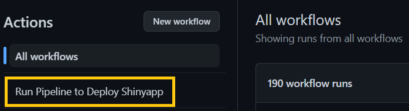
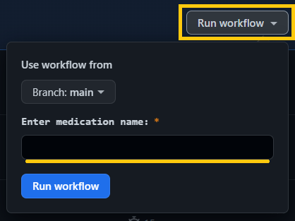

Initial research questions
- To what degree are adverse medication reactions shared on social media beyond official reporting?
- Are there unacknowledged adverse drug reactions (ADRs) absent from the FDA's Adverse Event Reporting System (FAERS)?
- Are significant outliers present? If so, what is their magnitude of difference?
- Can social media be considered a reliable data source for pharmacovigilance, and at which point is this determination made?
Initial scope
- Conduct a comparative analysis of the reporting rates of ADRs for the most prescribed medications in the United States on social media platforms versus FAERS to evaluate the feasibility and effectiveness of using social media data mining for post-market surveillance of medications (pharmacovigilance).
Measurable Objectives
- Collect ADR data from social media and FAERS
- Develop ADR extraction methods for social media
- Compare social media ADR rates to FAERS baseline
- Identify unrecognized ADRs and significant outliers
Constraints
- Limit on the number of medications which can be included in the data
- Reddit-specific limitations: younger demographic and longer comments
- Consideration of data collection differences and social media biases
Initial methodology
- Research methods: Reddit scraping (Twitter ended public API access), sentiment analysis, FAERS data mining
- Intended audience: Pharmaceutical, bioinformatics, public health researchers
- Format: Website with visualizations, dashboards, and statistics
- Preliminary description of final data story/product: Comprehensive website exploring social media data mining for pharmacovigilance
Initial data management strategy
- Google Cloud for secure, scalable data storage and processing
Key performance indicators (KPIs)
- ADR recognition rate: The percentage of ADRs reported on social media platforms that are also recognized by FAERS.
- Outlier magnitude: The magnitude of any significant outliers in the ADR reporting rates between social media platforms and FAERS.
- Model training metrics: Precision, recall, and f1-score.
Initial exploratory data analysis (EDA)
- Applied SentimentIntensityAnalyzer on Reddit comment content
- Added Polarity Scores and assigned sentiment labels to DataFrame rows
- Visualized results with Seaborn box plots and count plots
- Basic topic modeling of negative Reddit comments using LatentDirichletAllocation
- Utilized wordcloud library to visualize most used words per medication
- Colored words based on sentiment analysis with TextBlob library
- Employed pandas to compare word frequency across different sentiments
- Calculated frequency differences for positive and negative Reddit comments
Sentiment Analysis


Wordcloud

Word Frequency Comparison

A pivot was needed...
- Upon further research and suggestions from our mentor, we decided to dip our toes into neural networks and deep learning methods due to the complexity of our problem. To set the foundations for this transtion, a metamorphosis of our method was needed.
- Namely, we would need to narrow our scope from many medications to choosing one to build a solid model on. From there, building a pipeline which can then be used for other drugs
Prodigy Annotations
- Annotated raw Reddit text in Prodigy, highlighting symptoms and drugs, and saved annotations in JSON format
- Incorporated Medical Dictionary for Regulatory Activities (MedDRA) terminology of side effects to enhance model's vocabulary
- A sizeable amount of annotations were needed in order to improve the model's performance. Therefore, we decided it would be best for the team to split into pairs and start annotating as a group.
- Set up a Google Cloud VM and installed Prodigy for collaborative annotation work
- Reworked key performance indicators to include Cohen's Kappa calculations in order to ensure inter-rater reliability (IRR) between the pairs
- Inter-rater reliability
- Ensures consistency and accuracy in annotation tasks
- Minimizes subjective bias and variability among annotators
- Enhances the quality of training data and overall model performance
- Cohen's Kappa
- A statistical measure that quantifies the level of agreement between two annotators
- Accounts for agreement by chance
- Kappa values range from -1 to 1, with 1 indicating perfect agreement and values above 0.6 generally considered acceptable
Annotation Styles
- Named Entity Recognition (NER)
- Identify and lebel drug names and adverse reaction words or phrases in the text
- Span Categorization (SpanCat)
- Detect and categorize relevant spans of text related to adverse drug reactions, allows for overlapping labels for context
- Text Classification (TextCat)
- Categorize the text as containing an ADR for any drug or not
spaCy Natural Language Processing (NLP) Library Compatibility w/ Prodigy
- spaCy provides pre-trained models that can be used with any of these annotation styles
- However, before we train with any of these, we must assert some form of inter-rater reliability for our annotations
NER
- When using Prodigy, we use two potential tags for terms/entities in the text: DRUG and ADR.
- The DRUG tag is only applied to the specific medication we are looking for (currently ocrelizumab aka Ocrevus).
- Any other drugs mentioned in the text are not tagged.
- The ADR tag is only applied to specific symptoms, diseases, reactions or other events related directly to ocrelizumab in the text.
- If there are no ADRs mentioned but the desired medication is mentioned, we tag the DRUG and accept the comment.
- If the medication we are looking for is mentioned and ADRs are explicitly or contextually tied to the medication in the text, we tag both DRUG and ADR examples and accept the comment.
- If the medication we are looking for is not mentioned and ADRs are also not mentioned, we tag nothing but accept the comment.
- If the medication we are looking for is not mentioned, but terms that could be ADRs of any kind are mentioned, we tag nothing and reject the comment to remove it from consideration.
- Unable to calculate Cohen's Kappa due to misunderstandings on 'accept' vs. 'reject' in the annotation rules.
- Complexity to labeling adverse drug reactions in as casual and imprecise a format as Reddit comments.
- One of the larger factors in this dilemma it seemed, was context. Which prompted us to try the next method, SpanCat.
SpanCat
- Switched to Spancat, to align more with what we intended to do with our project which was labeling ADRs pertaining to a specific DRUG. The span categorization method allowed us to have overlapping labels providing the model with more context clues
- Overcame technical issue with MySQL database for Prodigy by limiting to posts 2000 characters or lower
- Zach and Taylor's Cohen's Kappa: .46
- Aidan and Jackson's Cohen's Kappa: .34
Switched medications
- Ocrevus, while a popular medication on Reddit, was almost too good of a medication. We needed to provide data to the model that had ADRs in it in the first place if we were wanting to train the model to pick out ADRs.
- Therefore, we switched to Humira, a tumor necrosis factor (TNF) blocker that reduces the effects of a substance in the body that can cause inflammation.
- We noticed many people mentioning and complaining about Humira while annotating the "Ocrevus" comments.
NER/SpanCat Models: Sense2vec
- Sense2Vec is a novel method for word sense disambiguation in neural word embeddings using supervised NLP labels instead of unsupervised clustering.
- A word sense is usually determined by the words around it, or the co-occurrence of words. Word sense disambiguation is the task of identifying the correct sense of a word in a given sentence or text.
- sense2vec can disambiguate between different parts of speech, sentiment, named entities, and syntactic roles of words, and shows subjective and qualitative examples of the disambiguated embeddings.
Text Classification: RoBERTa w/ Classifier; GPT2
- RoBERTa with classifier for ADR identification, and using ChatGPT-generated comments to augment training data
- Also tried a GPT2 model with classifier for ADR identification, decided to settle on RoBERTa due to better performance
Overall shape of our final pipeline flow begins to take shape here | binary classification -> named entity recognition on classified comments
Annotation Progresss
- Inter-rater reliability (Cohen's Kappa) improvements:
- Span Categorization (from previous SpanCat):
- Taylor and Zach: .46 -> .55
- Aidan and Jackson : .34 -> .56
- Text Classification:
- Taylor and Zach: .74
- Aidan and Jackson : .58
Reproducible Pipeline
- We want to provide the ability to filter social media's comments of not just Reddit, but other platforms such as Twitter or Facebook
- Allowing the user to input any medication or adverse drug reaction that they are concerned about
- Prime directive is for the tool to be accessibile and usable by academic, corporate, governmental, and public entities
RoBERTa Text Classification
- Pre-trained RoBERTa base model from HuggingFace transformers library
- “Robustly Optimized BERT Pretraining Approach”
- Builds on classic BERT model with longer and more focused pretraining and hyperparameter optimization
- Custom PyTorch Dataset and Dataloaders
- Text preprocessing (removal of punctuation, links, etc.)
- Comments are split into lists of strings and passed into RoBERTa tokenizer item by item with overlap between them
- PyTorch classification “head” on top of RoBERTa base model
- Takes pooled output of RoBERTa and performs classification (ADR or no ADR)
- nn.Dropout to help prevent overfitting
- nn.Linear transforms output to number of classes
- Training parameters
- 5 training epochs with validation cycle after each
- CrossEntropyLoss with class weights
- AdamW optimizer
- Linear learning rate scheduler
Flair Named Entity Recogntion
- Stacked Embeddings
- GloVe Embeddings (word similarity, co-occurrence)
- FlairEmbeddings (forward and backwards context)
- Character level-embedding
- Same word will have different embeddings depending on its contextual use
- WordDropout and LockedDropout
- Drops words and feature dimensions to prevent overfitting (p = 0.05)
- Recurrent neural network (RNN) - Bidirectional Long Short Term Memory (biLSTM)
- Provides short-term memory for RNN that can last thousands of steps
- Processes the input sequence forward and backwards (4196 input, 256 hidden output, x2 for bidirectionality)
- Linear layer
- 5 training epochs with validation cycle after each
- CrossEntropyLoss with class weights
- AdamW optimizer
- Linear learning rate scheduler
- ViterbiLoss function
spaCy Dependency Parser
- Pre-trained
Final Annotations
- Inter-rater reliability (Cohen's Kappa) improvements:
- Text classification (from previous TextCat):
- Taylor and Zach: .74 -> .73 (retained IRR)
- Named entity recogntion:
- Aidan and Jackson: .58
RoBERTa Evaluation Metrics
- Data is split into training, validation and test sets
- Run through with a batch size of 8 using a custom PyTorch data loader and the RoBERTa tokenizer which is a BPE (byte pair encoding) tokenizer.
- Model is trained for 5 epochs, with a validation cycle after each epoch.
- The training and validation accuracy and loss metrics are calculated at each training and validation step and convergence is observed.

RoBERTa Evaluation Metrics
- Data is split into training, validation and test sets
- The training process is configured with a learning rate of 0.1, a mini-batch size of 32, and a maximum of 25 epochs.

Docker and Github
- Docker containerization, deployment
- Github repository and Github Actions workflow
- Building a docker image
- Run the pipeline on local runner
- Uses Git LFS
- Post exec-week, upon suggestion from Dr. Scott, started researching Nautilus
Docker, Github, and Nautilus
- Model runs on Nautilus
- Still able to mantain Github Action workflow (needs self-hosted runner)
- Config file refresh leads to hiccups when running, usually needs to be reset once daily, but works otherwise.

